My Work
Entropia Universe
Entropia is a sandbox sci-fi MMORPG, playing similarly to Star Wars Galaxies. The USP is that it uses Real Cash Economy. This brought with it a lot of design challenges.
I worked for 4 years on Entropia, and have compiled a selection of my work below.
Responsibilities
- System Design
- Gameplay Balancing
- Economic Balancing
- Technical Game Design
- Content Design
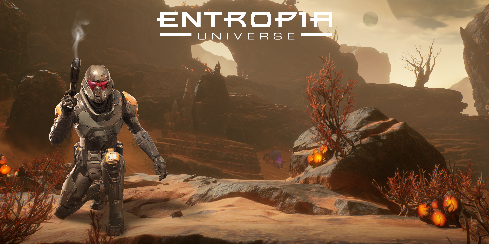
Entropia Unreal Engine - Ability System
Like many older games, Entropia has been planning to release an Unreal Engine update of the game. This was the main project for the company when I joined and I was initially assigned to work on the Game Economy system. Early though, an opportunity presented itself for me to design the new Ability system from scratch, which included designing the identity of each weapon (which we used instead of classes), their interplay with other systems and the individual abilities themselves.
Since Entropia lacks classes and most of the gameplay is "click the enemy and auto attack it to death", I wanted to introduce much-needed variety in the combat, while also keeping gameplay exploration a key part of it. My primary focus for the Abilities were to make each weapon type feel like a classic MMO class, with ability rotations and roles. Their identities should be distinct and bring something to the table that other weapons cannot. This would allow players to specialize and further the "make a name for yourself" keystone of MMO social play.
For example, the Laser weapons was the first one I worked on and it started a lot more complex than the one you can see in the images. After some prototyping and iteration, the identity of the Laser weapons took shape and I could shave off the excessive parts of the design. This was a valuable lesson in keeping my designs, their identities and purposes, clean and defined.
While prototyping the abilities, we had just started using Unreal Engine's GAS (Gameplay Ability System) so I got to work trying it out. The system is very powerful and if the project continued I would have loved to further work with it. Especially for a game like Entropia which has hundreds of parameters, being able to connect the parameters in GAS to a spreadsheet was very useful.
One of my favorite designs from this project was my "Critical State" debuff system. It was a way to standarize all debuffs the players could apply, but also reward them for focusing on one debuff in specific by working to stack it into Critical Levels. These debuffs would then evolve and apply an additonal effect, something that synergies with the previous debuff.


Entropia Unreal Engine - Mining
Mining is one of the 3 pillars of Entropia, and designing the Unreal Engine version was a huge challenge. Fortunately the current system is very basic, so I was allowed to design something more interesting from scratch. The main issue was that the Mining system had already gone through 3 extensive iterations before I got my hands on it, and it still didn't seem like there was a unified idea of how the Directors wanted it to be. In order to find that idea, I decided to start prototyping and having check-ins with Direction to make sure that it fit the vision this time.
To me, mining gameplay always came down to 2 gameplay loops: Surveying and Extration. Couple this with a solid Spawning logic, and you have the basis for a Mining System. Surveying dealt with information collection, allowing players to gather hints regarding the mineral composition of areas in order to find an ideal location for them to mine. Extraction was meant to be the more active part, chosing where to extract, defending the extractor, optimising equipment, etc. Spawning new deposits had to be hard for players to predict, but still give the development team control over where they spawned.
After prototyping and getting feedback, I realised that the older designs for mining had gotten too complicated because of opinions and debates compiling into a mass of requirements that left the design oversaturated and needlessly complicated. Therefore my final design was slimmed and focused.
The Prototype
Players would gather macro-level information at outposts about what the nearby mineral compositions looked like and the general area where they can be found. Players could then go these areas and use their Finder scanning tool to find Deposits of minerals.
After finding a good spot where the most minerals had overlapped, or that had a high concentration of a specific mineral, the player would call in their Extractor from the sky. Striking down and starting the process of pulling minerals from the ground. These extractors could also attract monsters in the area, but the monsters would never stop the extraction, only serving as a danger to the player themselves.
The deposits would be semi-autogenerated where new spawn location would be generated each week, but only 90% of them would be active at the same time. This would allow new spawns to appear to be generated on the fly and be harder to predict and map out. Designers would also be able to add specific new spawn areas, to accommodate for events and the like.

Entropia - Space Mining Update
Entropia released Space travel in 2011, with various huge promises of new gameplay systems that would come with it. Among them was Space Mining, but it was never finished. In early 2025, we finally released it, although it had been completely remade from the ground up. I was in charge of prototyping the Core Gameplay Loop, design the Asteroids you had to destroy and balancing all stats and loot for both the Asteroids and the Mining Lasers.
From the start, I wanted to make Space Mining more interactive than Planetside Mining. After a brainstorming session with the Lead Designer, Game Director and Tech Lead, I started working on prototypes to test the gameplay. These were made in Unreal Engine 5 since the Cryengine 2 (Beta) that Entropia runs on doesn't support any tools for scripting and prototyping. This workflow was my idea, and worked as a great way to test out our ideas before spending weeks implementing it in Cryengine. Over the course of 3 days I completed 3 prototypes of varying complexities, but all of them shared the core theme of "cracking" the asteroid using a powerful laser. We wanted to re-use code from the existing Taming system, and I worked this into a balancing-act gameplay loop, where the Asteroid loses Health and Integrity when shot, but builds up Heat which increases the amount of Integrity lost. The player would want to keep Integrity within a specific span when the Health reached 0% in order to maximise their loot.
The prototypes varied mostly in the player actions, and the interface they had to use. The first was simply shooting the asteroid and then stopping when Heat got too high. The second used "crack points" that spawned on the Asteroid, requiring players to find them and destroy them for optimal loot. The last used a "control panel" style of UI, where the player could twist knobs to adjust Frequency and Intensity of the laser, trying to match a semi-hidden wave-pattern in the Asteroid in order to effectively crack it.
In the end, the technical limitations of Cryengine proved to be our downfall and the final form of Space Mining was simply shooting the Asteroid until it lost all Health. No Heat or Integrity mechanics, just a special weapon that could only deal damage to Asteroids.
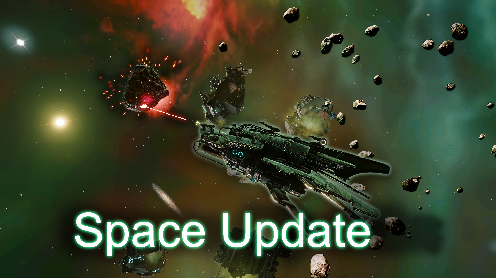

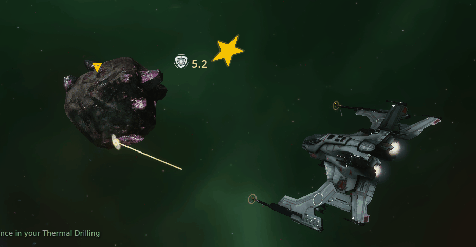
Entropia - Onboarding update
In 2025 it was decided that the Onboarding experience for Entropia had to be updated. The project mainly included creating a whole new area, with a quest chain that would be more engaging and interesting than the more stilted tutorial zone we previously had. This new area, Setesh, was also going to feature long-term progression for players that wanted to stay on the planet.
The area was divided into 3 sections, that the player would travel through over the course of the quest chain. I was responsible for designing the final area, as well as all of the item and creature balancing. I also created a Crafting tutorial quest which was greatly appreciated by the playerbase.
I was particularly proud of the robot base that was the final in-world dungeon that the players ventured into before departing the tutorial area. There tends to be a lot of lag when loading into instanced zones in Entropia, and in order to keep the flow going, I chose to create the dungeon in-world instead, so that there would be no need for loading. This included a lot more work on my end, but my motivation to make it cool kept my pace high and it ended up really good in the end.
Post-release we could see that the effects of the project had been very successful, with greater increases in new player numbers and retention than we'd had in years prior. The stats themselves you can see in the image below.

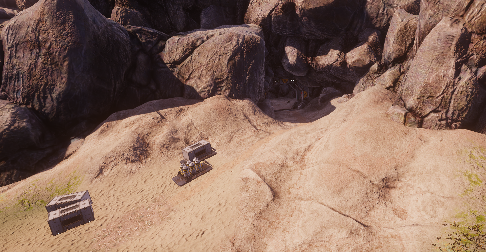
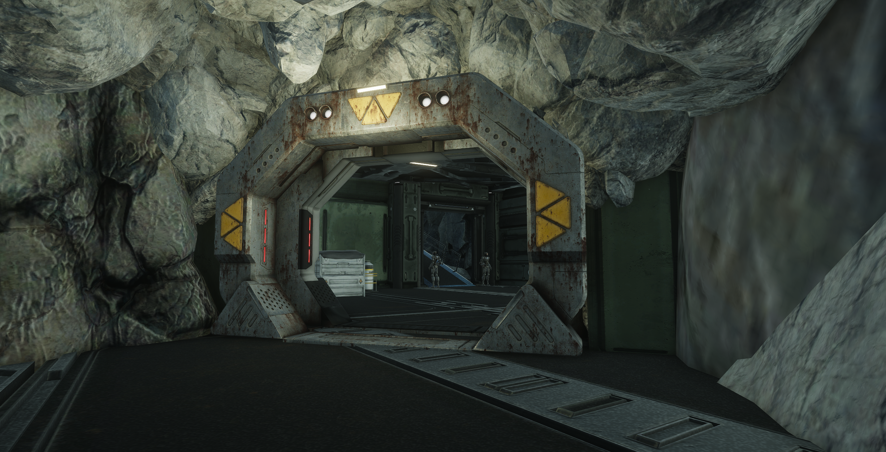
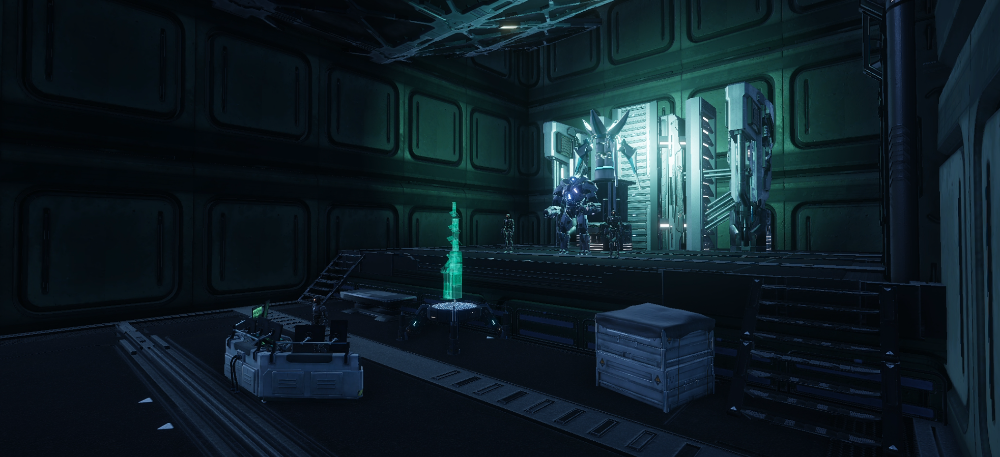
Entropia - Spina Invasion
Possibly the coolest event I worked on in Entropia. A science vessel had crashed into Calypso carrying living samples of a insectoid race meant to be studied, but the bugs broke out and killed the crew.
The event featured 3 redesigned areas, with missions, NPCs and new loot. We released the areas over time, and the final area also contained an instanced dungeon that ended with the players facing off against the Queen of the swarm. This boss fight was meant to be a real challenge for the high-end players, so we went all out with the difficulty. Initial estimations was that it would take the players 1 week to get the first kill. They did it under 24 hours (although this was done using exploits). This event was praised by the community and is still active today.
For my part, I was responsible for balancing the stats of the boss and the mobs that she spawned. I also designed many of the mobs that would appear in the crash sites. Lastly, I created several of the daily missions and their rewards.
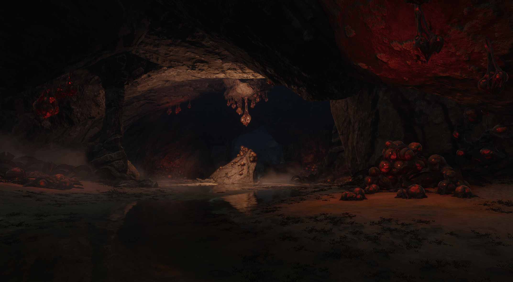
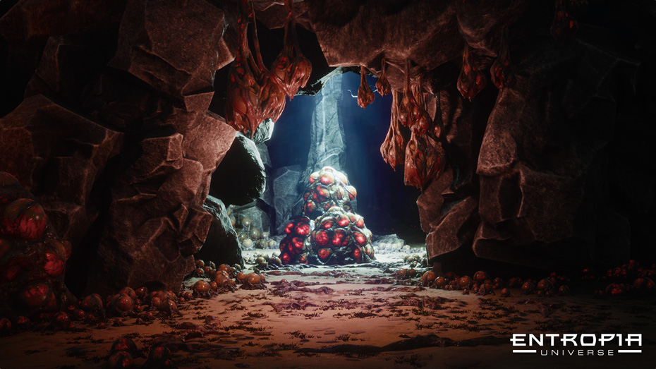
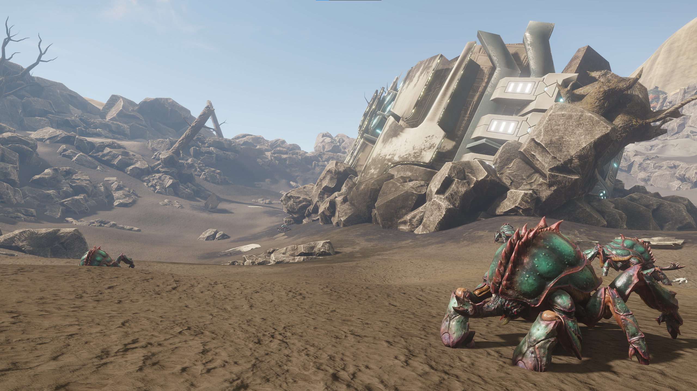
CHAIN SHOTGUN
Indie project. A boomer shooter where you wield the CHAIN SHOTGUN, a gun that can take on infinite shotgun barrels, each filled with a different payload of destruction. What could be better than a double barreled shotgun? The answer: More barrels.
Responsibilities
- Technical Game Design
- Project Planning
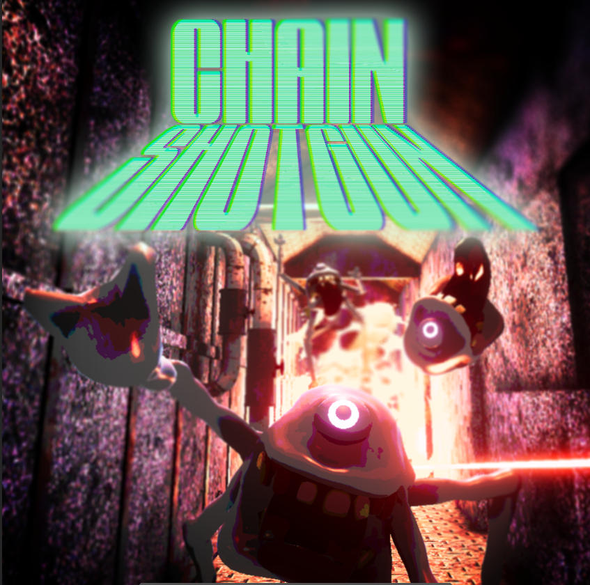
Roll Die, Go Home
Indie project. A pun-filled roguelite dungeon crawler in the style of Enter the Gungeon or Binding of Isaac. You have a dice for a head and equip the different sides with unique powers.
Responsibilities
- Game Design
- Level Design
- Technical Game Design
- Project Planning
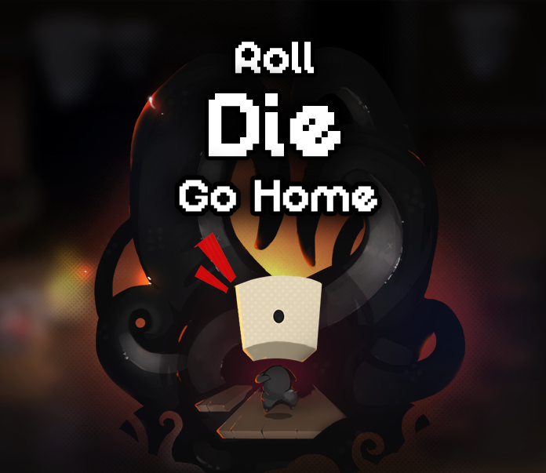
Get in Touch
Feel free to reach out to me via email or LinkedIn.
larsson.albin95@gmail.com